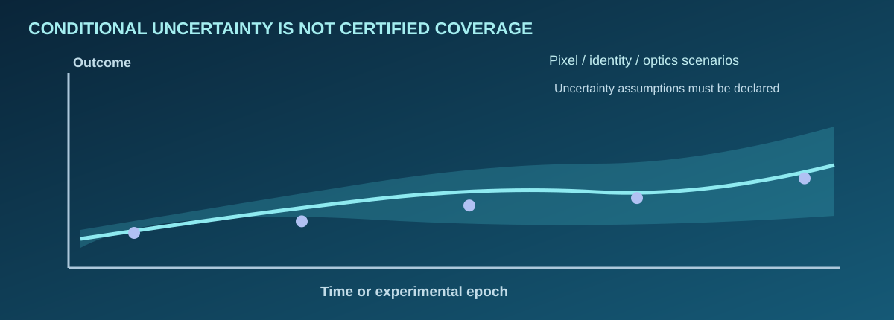

Uncertainty propagation and sensitivity analysis
Source:vignettes/articles/uncertainty.Rmd
uncertainty.RmdUncertainty-aware aquatic trajectories
Uncertainty may originate in detector localization, tracking gaps, camera clocks, optics, fish identity assignments, and experimental sampling. The package makes several of these sources explicitly perturbable, but their distributions require independent evidence.

Illustrative assumed scenarios; the band is not an empirically certified confidence interval.
Sources that should not be collapsed indiscriminately
| Source | Available utilities | Caution |
|---|---|---|
| Image pixel locations |
aqt_stereo_pixel_mc(),
aqt_reconstruction_pixel_uncertainty()
|
Requires assumed pixel error law |
| Coherent trajectory errors |
aqt_trajectory_ensemble(),
aqt_ensemble_path_summary()
|
Scenario SD is not automatically a confidence interval |
| Fish track ID switches |
aqt_identity_switch_scenarios(),
aqt_identity_tank_sensitivity()
|
Specified switch probabilities are not empirically calibrated |
| Optical parameters and correspondence |
aqt_joint_refractive_scenarios(),
aqt_joint_event_sensitivity()
|
Depends on supplied camera and identity perturbations |
| Experimental tank sampling |
aqt_tank_event_contrast(),
aqt_joint_tank_sensitivity()
|
Keep external measurement error distinct from tank resampling |
| Detector dropout |
aqt_detection_dropout_scenarios(),
aqt_detection_event_sensitivity()
|
Performance depends on dropout model validity |
A defensible reporting sequence
- Declare which errors are measured and which are only hypothetical.
- Preserve original source pixels and camera timestamps.
- Sample coherent scenarios rather than independently jittering every point when errors are correlated.
- Recalculate movement, state and event outcomes under each scenario.
- Report scenario ranges and assumptions separately from experimental sampling uncertainty.
- With independently measured holdout truth, assess bias and coverage before claiming calibrated intervals.
Visual audit
Use aqt_plot_ensemble2d(),
aqt_plot_ensemble3d(),
aqt_plot_joint_scene_cloud()
and aqt_plot_joint_scene_cloud3d()
for uncertainty overlays, always labeling them as conditional
sensitivity absent external calibration.
The package intentionally does not treat these hypothetical clouds as verified biological identity probabilities or physically calibrated XYZ confidence regions.
Source protocols: source protocol, source protocol, source protocol and source protocol.